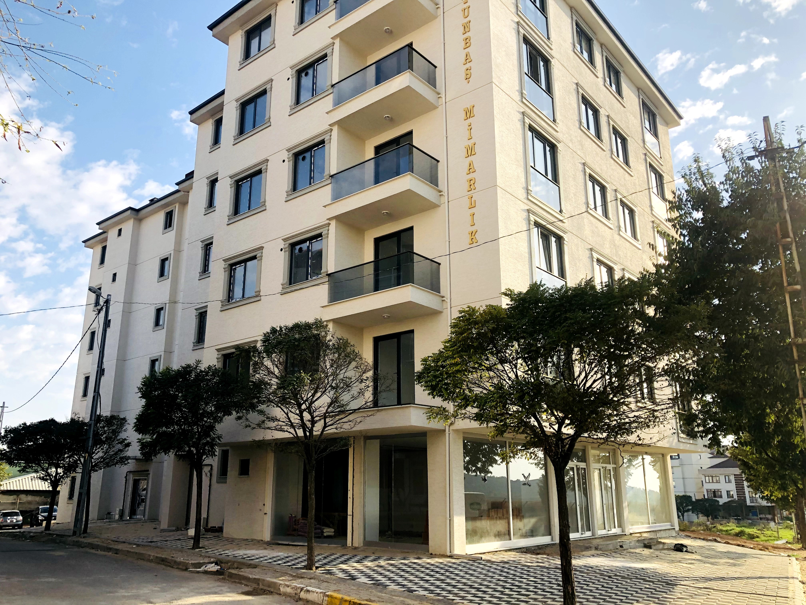
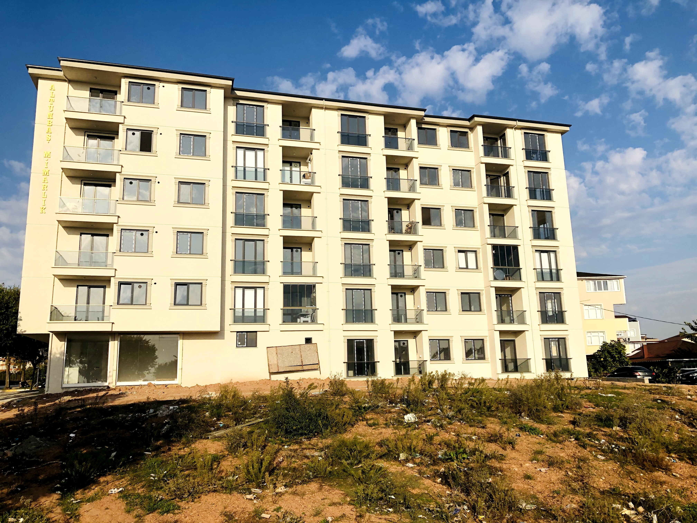
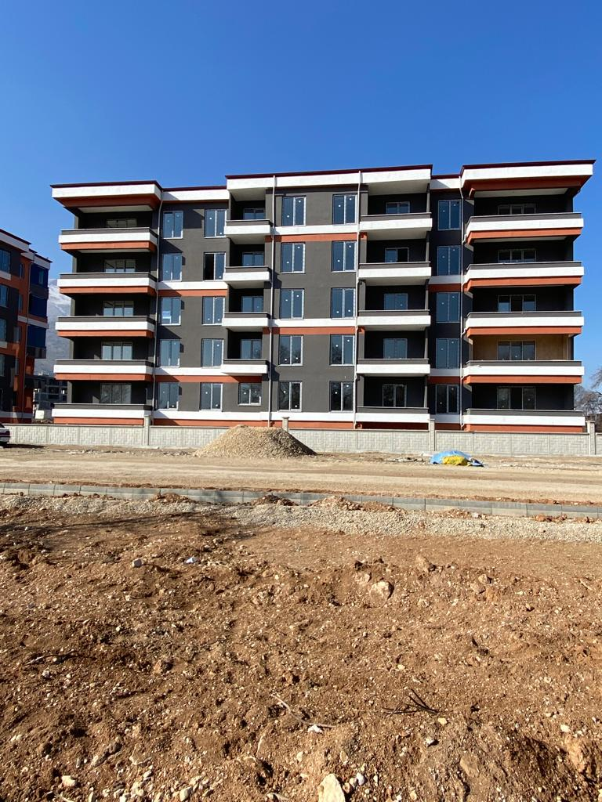
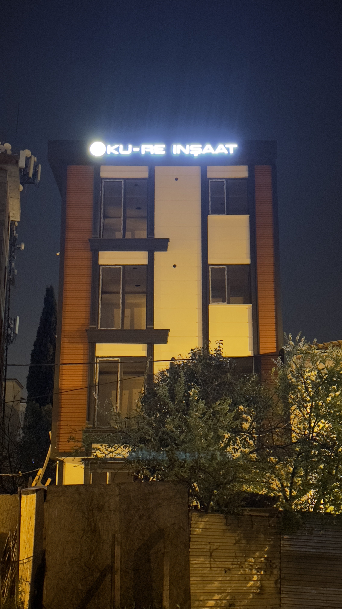
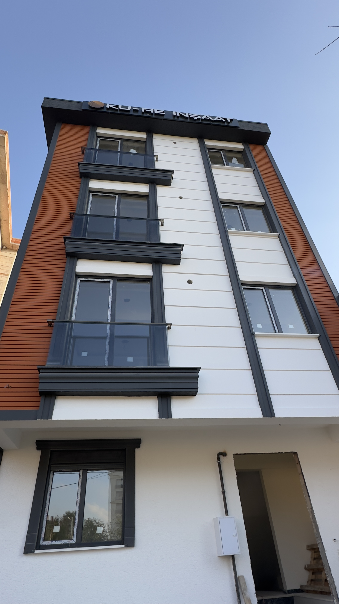
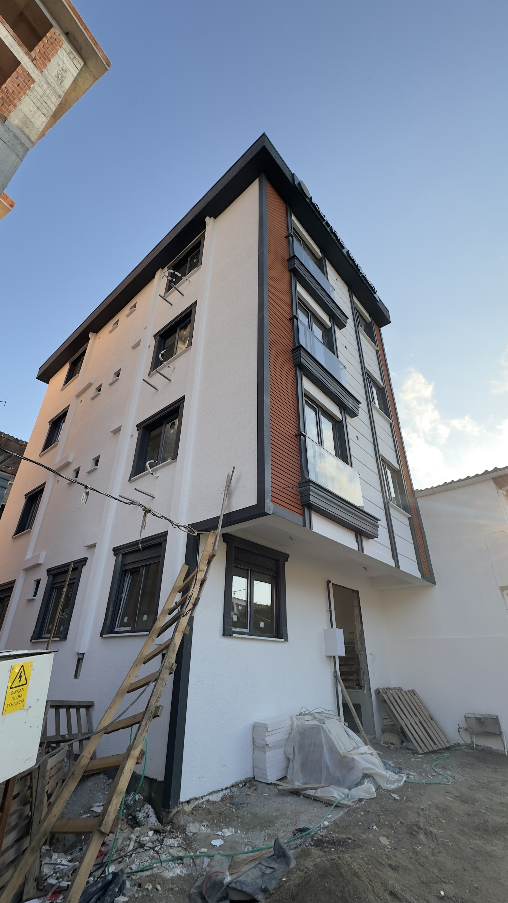

Projelerimiz




Tuzla Şifa Mahallesi Projesi (2018).
Tuzla'nın Şifa Mahallesi'nde inşa ettiğimiz bu modern proje, 27 daire ve 2 ticari ünite içermektedir. Toplamda 3.200 metrekarelik bir alanı kaplayan bu proje, şehrin karmaşasından uzak, konforlu ve estetik bir yaşam sunmaktadır. 12 aylık titiz bir inşaat sürecinin ardından 2019 yılında tamamlanmış ve sahiplerine teslim edilmiştir.



Elbistan Ceyhan Nehri Kıyısı Projesi (2020)
Elbistan'da, doğal güzellikleriyle ünlü Ceyhan Nehri kıyısında hayata geçirdiğimiz proje, 40 dairelik iki bloktan oluşmaktadır. Modern mimarisi ve fonksiyonel tasarımıyla bölgenin dikkat çeken yapılarından biri olmuştur. Projemiz, yüksek kaliteli malzemeler kullanılarak tamamlanmış ve teslim edilmiştir.



Tuzla Postane Mahallesi Projesi (2023)
Tuzla, Postane Mahallesi'nde, şehir yaşamının tüm ihtiyaçlarını karşılayan 7 daireden oluşan ve 400 metrekarelik alana sahip projemiz, 6 aylık hızlı bir inşaat sürecinin ardından 2024 yılında tamamlanmıştır. Projemiz, modern tasarımı ve işlevsel yapısıyla bölgeye değer katmaktadır.